Atlas de Costa Rica
Explora el territorio de Costa Rica, sus regiones, paisajes, ecosistemas, fauna, cultura e historia.
Costa Rica
Un país pequeño en territorio, pero extraordinariamente diverso en paisajes, ecosistemas, pueblos y patrimonio.
Costa Rica se encuentra entre el océano Pacífico y el mar Caribe y posee una gran variedad de paisajes y ecosistemas. Su territorio incluye cordilleras volcánicas, montañas, bosques tropicales, llanuras, ríos, humedales, costas e islas. Este atlas reúne información sobre los diferentes elementos naturales, geográficos, culturales e históricos que forman parte del país.
Costa Rica en cifras
Algunos datos que ayudan a comprender la diversidad del territorio costarricense.
🌿 Biodiversidad
Costa Rica alberga una extraordinaria diversidad de especies animales y vegetales en relación con su territorio.
🌋 Volcanes
Las cordilleras volcánicas han contribuido a formar gran parte de los paisajes y ecosistemas del país.
🦥 Fauna
El territorio costarricense alberga una gran variedad de mamíferos, aves, reptiles, anfibios y especies marinas.
🌊 Dos costas
Costa Rica posee costas tanto en el océano Pacífico como en el mar Caribe.
Explorar el Atlas
Conoce algunos de los principales elementos naturales y geográficos de Costa Rica.

Volcanes
Arenal, Poás, Irazú, Rincón de la Vieja y otros volcanes forman parte del paisaje geológico de Costa Rica.

Costa
Explora las costas del Pacífico y el Caribe, sus playas, islas y ecosistemas marinos.
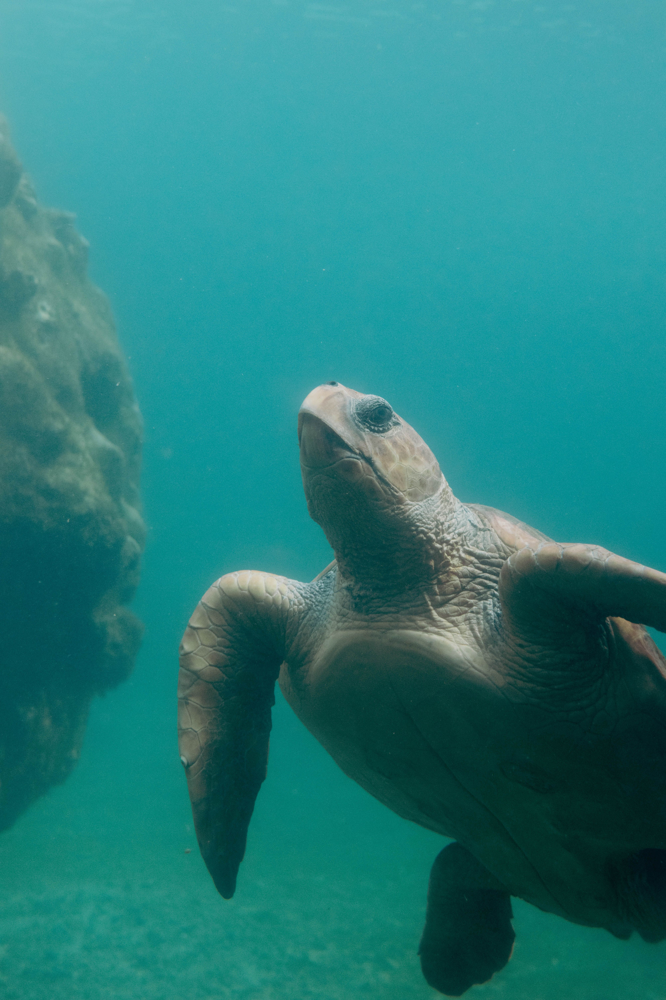
Fauna
Conoce algunas de las especies que habitan los diferentes ecosistemas del país.

Bosques
Desde bosques tropicales hasta bosques nubosos, descubre algunos de los principales ecosistemas terrestres del país.
Parques Nacionales
Las áreas protegidas forman una parte importante del patrimonio natural de Costa Rica.
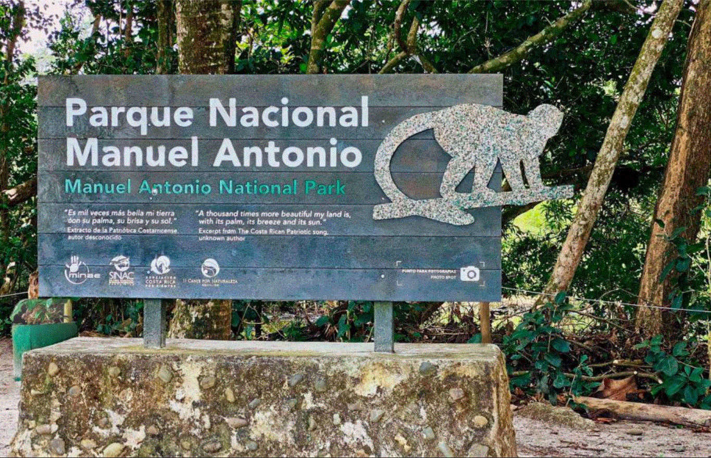
Manuel Antonio
Un área protegida donde se encuentran bosques tropicales, playas y una gran variedad de especies.
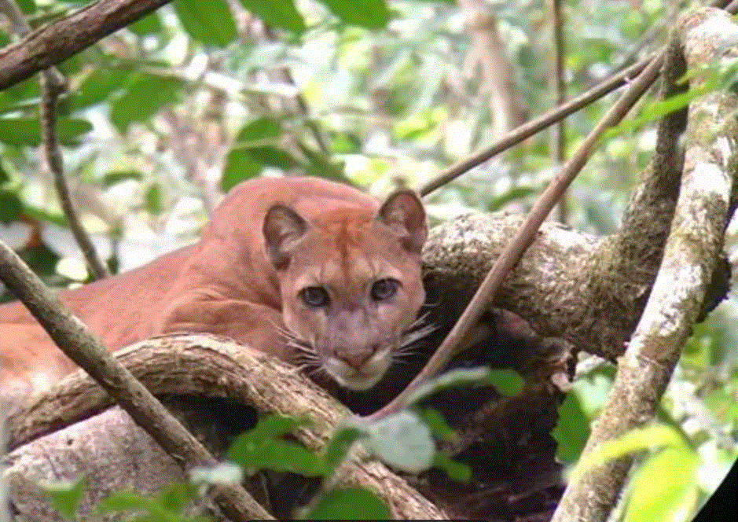
Corcovado
Una de las áreas naturales más importantes de la península de Osa y uno de los ecosistemas más diversos del país.
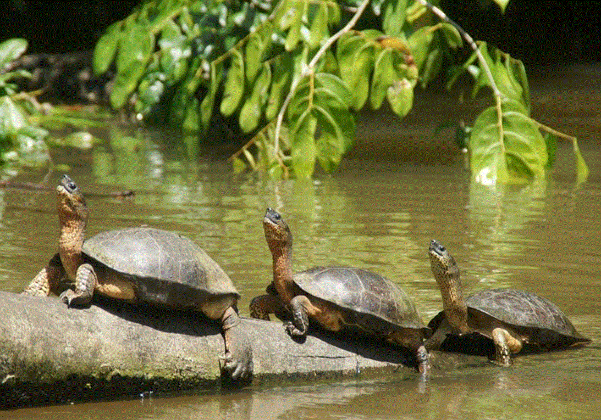
Tortuguero
Una región de canales, bosques y humedales ubicada en la costa del Caribe.
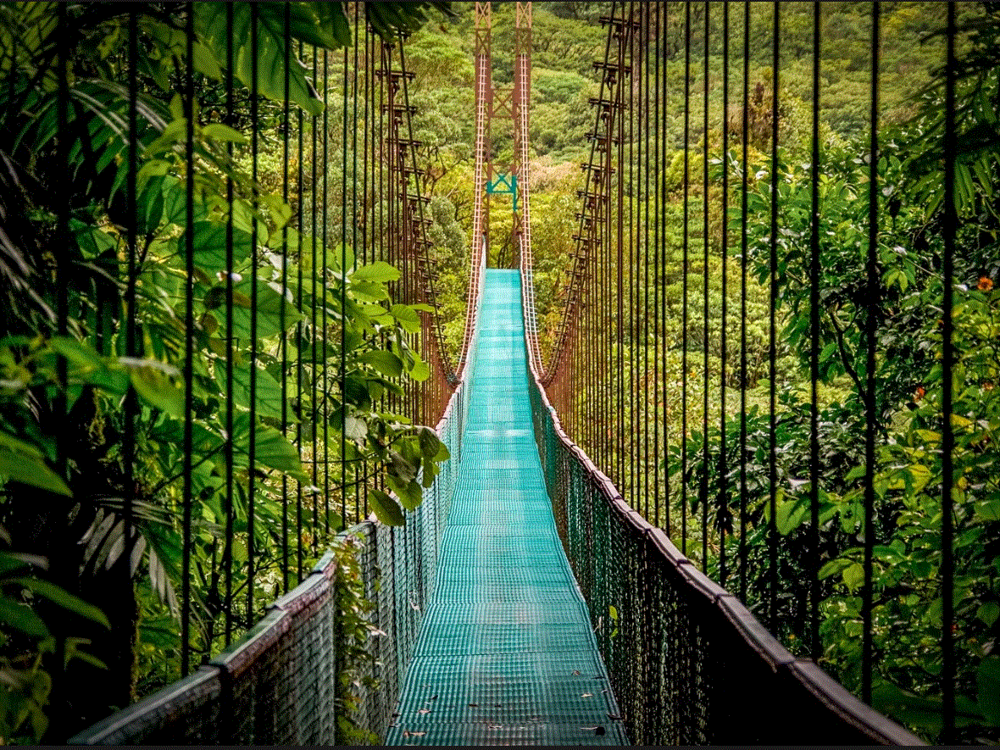
Monteverde
Una región montañosa reconocida por sus bosques nubosos y su extraordinaria biodiversidad.
Volcanes
Las formaciones volcánicas han influido en la geografía, los ecosistemas y los paisajes de Costa Rica.
Arenal
Uno de los volcanes más reconocibles de Costa Rica, ubicado en la región norte del país.
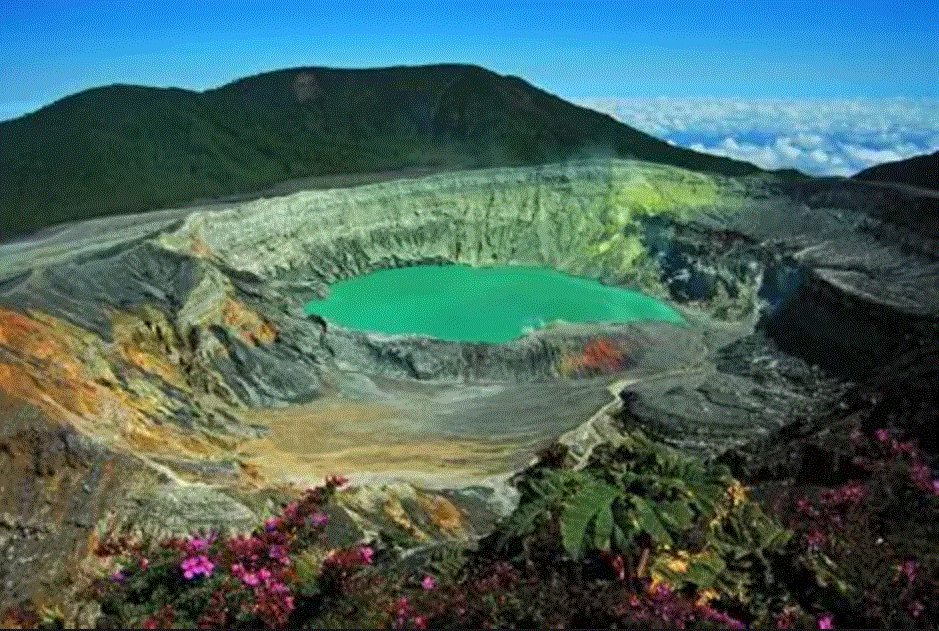
Poás
Un volcán activo conocido por su gran cráter y sus características geológicas.
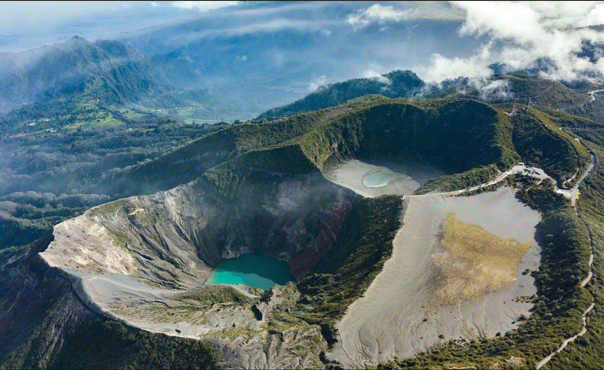
Irazú
El volcán más alto de Costa Rica, ubicado en la Cordillera Central.
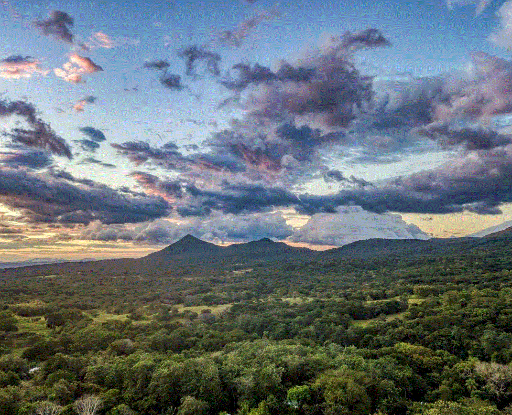
Rincón de la Vieja
Un complejo volcánico caracterizado por fumarolas, fuentes termales y actividad geotérmica.
Galería
Una muestra visual de los paisajes y ecosistemas que forman parte del Atlas.
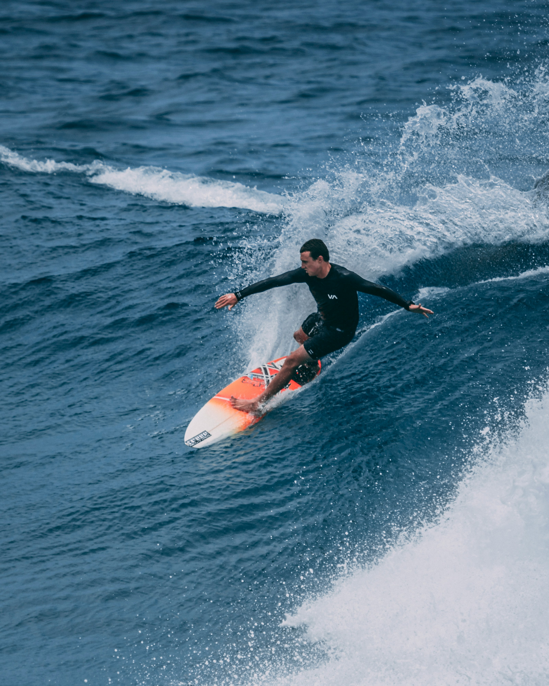
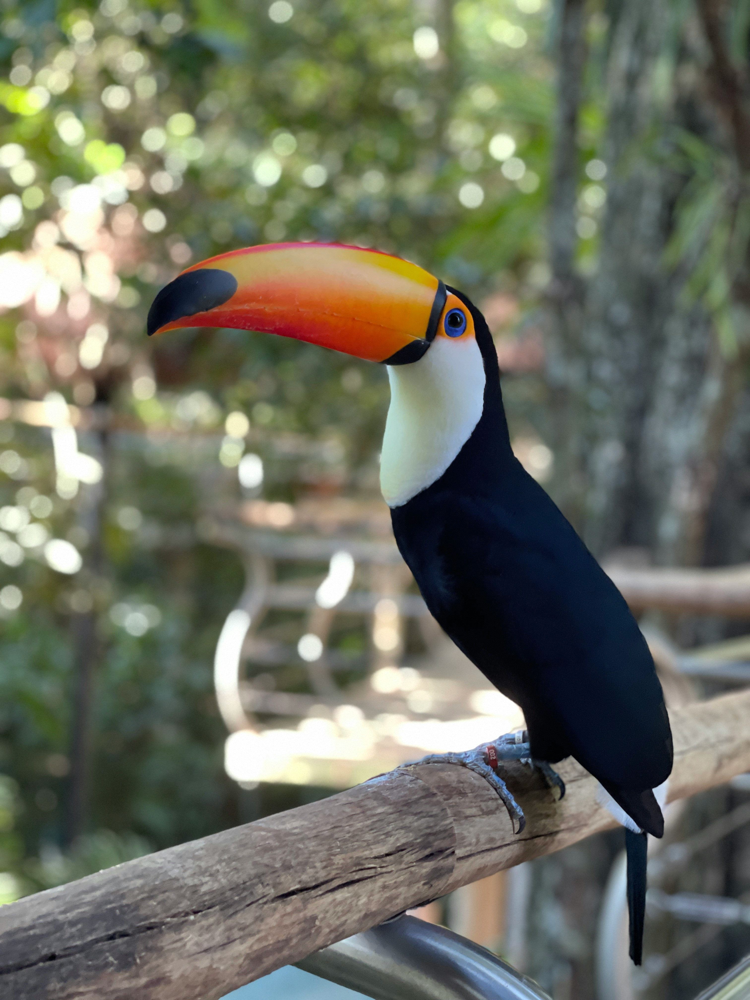


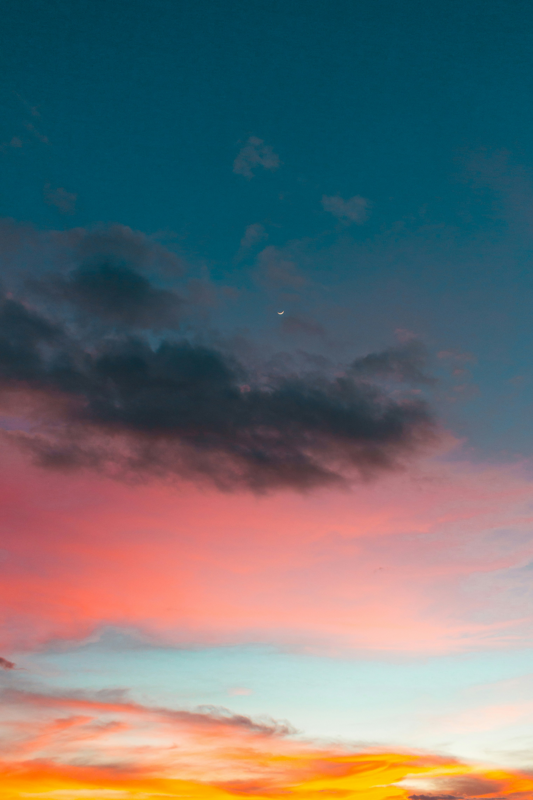
Playas
Las costas del Pacífico y el Caribe presentan paisajes, ecosistemas y comunidades diferentes.
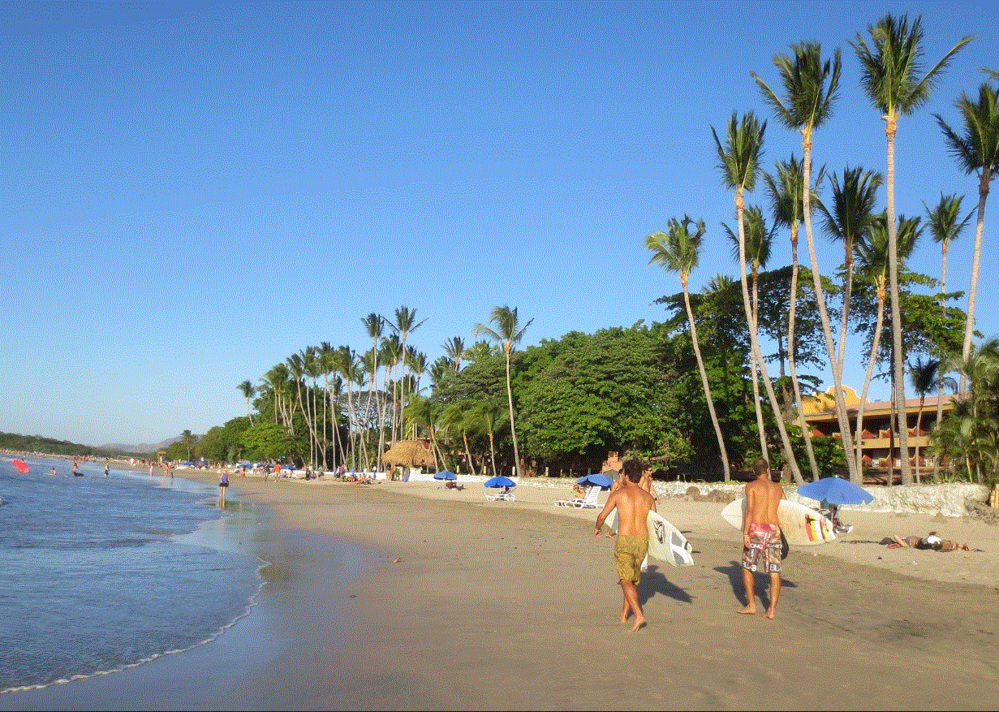
Tamarindo
Una localidad costera del Pacífico conocida por sus playas y ecosistemas costeros.
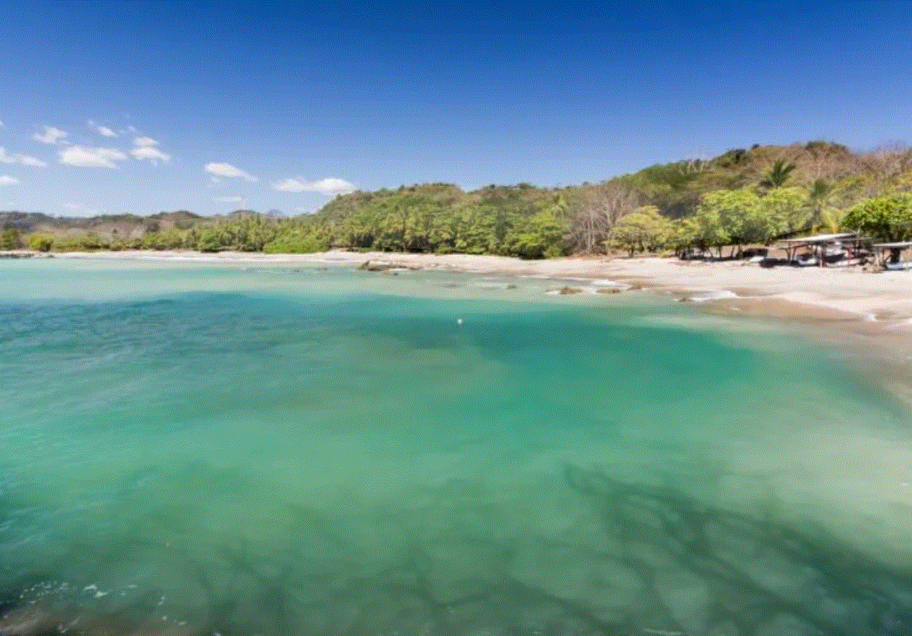
Playa Conchal
Una playa del Pacífico caracterizada por su costa formada en gran parte por fragmentos de conchas.
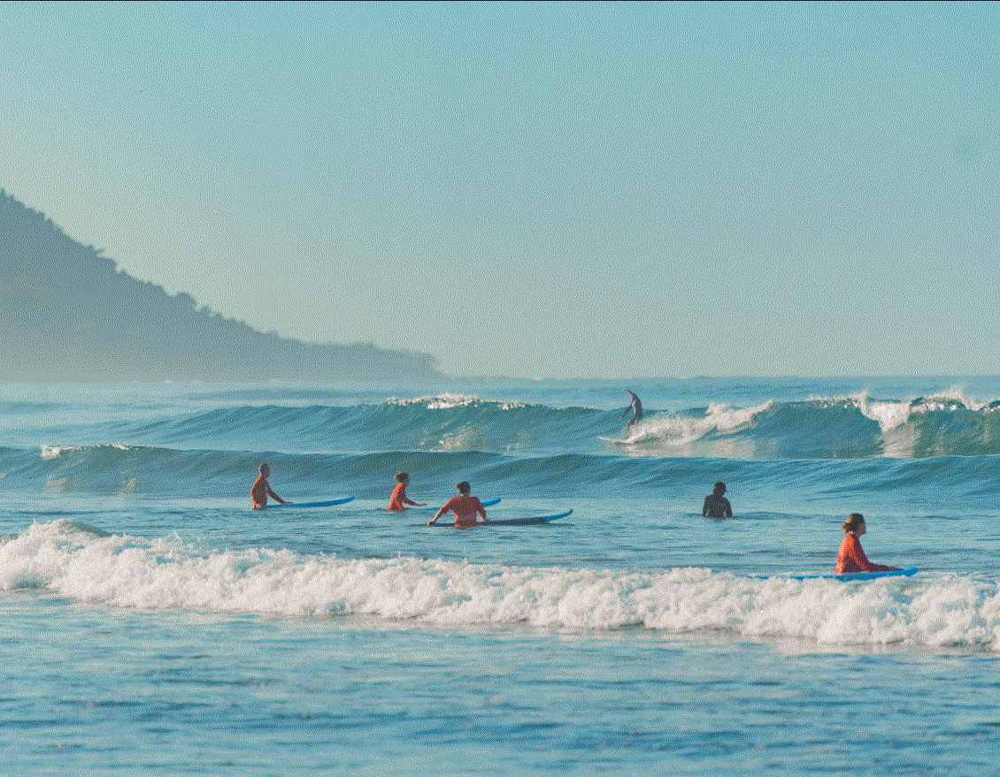
Santa Teresa
Una localidad costera situada en la península de Nicoya, frente al océano Pacífico.
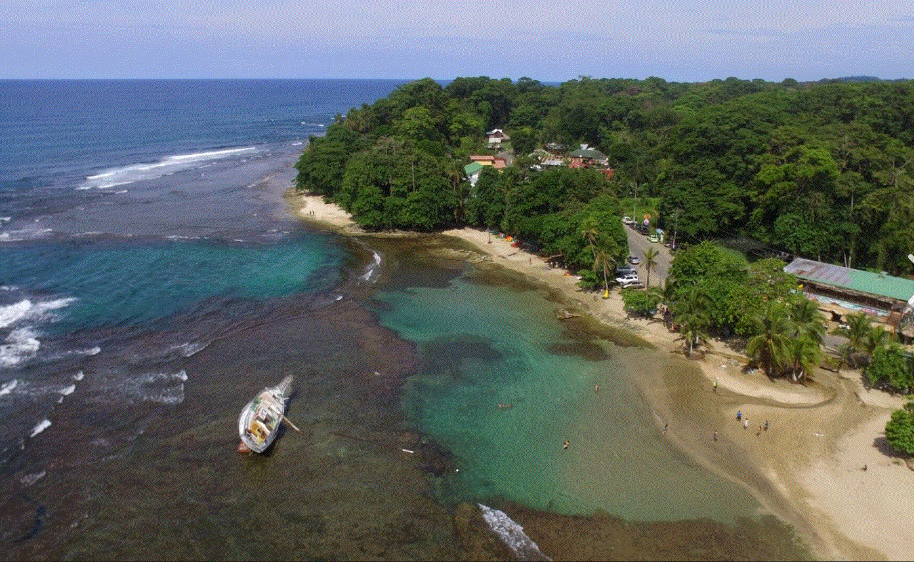
Puerto Viejo
Una localidad de la costa Caribe conocida por sus paisajes costeros y diversidad cultural.
Fauna
Algunas de las especies que forman parte de la diversidad biológica de Costa Rica.

Perezosos
Mamíferos arborícolas que habitan diferentes zonas boscosas del país.

Tucanes
Aves tropicales reconocibles por sus grandes y coloridos picos.

Guacamayas rojas
Grandes aves de colores intensos que habitan determinadas regiones del país.

Tortugas marinas
Varias especies de tortugas marinas utilizan las costas de Costa Rica para alimentarse y reproducirse.